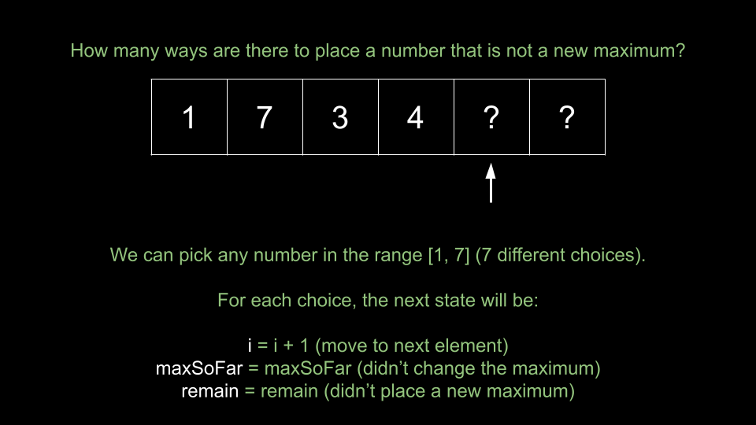
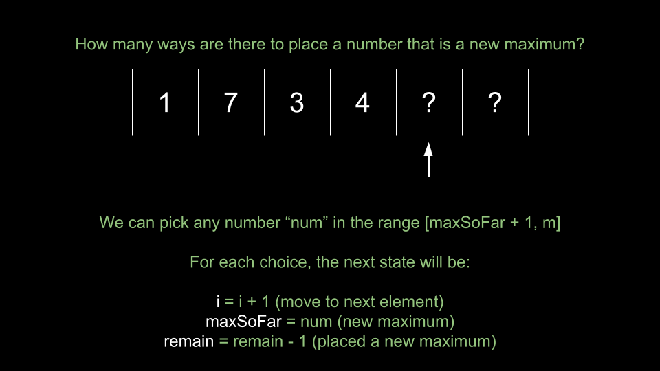
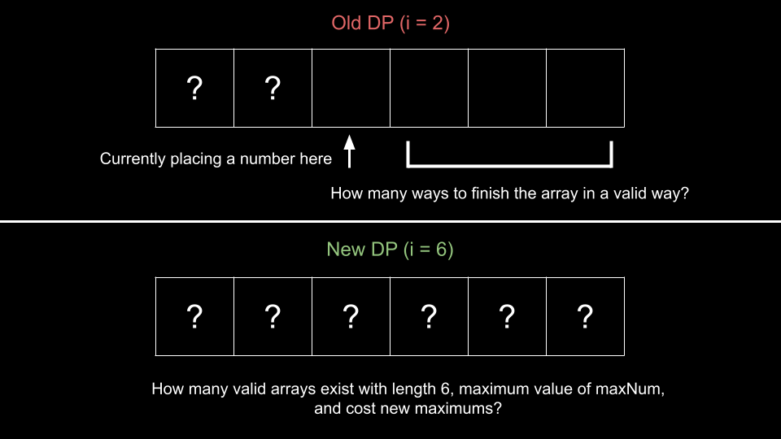

Intuition
Note. For this approach, we assume that you already know the fundamentals of dynamic programming and are figuring out how to apply it to a wide range of problems, such as this one. If you are not yet at this stage, we recommend checking out our relevant Explore Card content on dynamic programming before coming back to this problem.
Before we start solving the problem, let's carefully read the algorithm given in the problem description to try to figure out exactly what the problem is asking for. Upon careful inspection, we can deduce that the problem is asking:
How many arrays of length
nwith values in the range[1, m]exist, such that you will find exactlyknew maximums when traversing from left to right?
Given the massive number of possibilities, it seems impossible to actually try to build the arrays. Can we break the problem down?
Let's say you are currently building a candidate array. We don't need to know the exact contents of the array, but we need to know the following:
How many elements have we placed so far? Suppose we add elements to the array in order. We can represent this
with an index i that indicates the index of the next element we will place. For example, if the
current array is [1, 6, 4], the next element we will place is at i = 3.
The maximum element in the array. We can represent this with an integer maxSoFar. In the example
of [1, 6, 4], we have maxSoFar = 6.
How many remaining new maximums must we encounter before the end? We can represent this with
an integer remain. In the example of [1, 6, 4], both 1 and
6 are maximums, so if we need a total of x maximums, we have remain = x -
2.
Given a state i, maxSoFar, remain, can we come up with a recursive way to solve the problem? Let's
define a function dp(i, maxSoFar, remain) that returns the number of ways to build a valid array if we
have already placed i elements, the maximum element we have placed so far is maxSoFar, and
we need to place remain more new maximums. Then, the answer to the original problem would be dp(0,
0, k). We start with an empty array and need to place k new maximums.
What would our base cases be?
i == n, we have filled the array. The array is valid if remain == 0 and we will
return 1 in that case, or 0 otherwise.
remain < 0, then we have placed too many new maximums. We should immediately return
0 as it is impossible to form a valid array from this point forward.
Now that we have the base cases, how do we calculate a given state i, maxSoFar, remain? We will attempt
to place a new element at index i. There are 2 possibilities:
[1, maxSoFar]. The size of this range is maxSoFar - 1 + 1 = maxSoFar.
After placing a number, the next state is i + 1, maxSoFar, remain. We move to the next index, and
maxSoFar and remain are unchanged since we didn't place a new maximum. Thus, the total
possibilities is maxSoFar * dp(i + 1, maxSoFar, remain).

[maxSoFar + 1, m]. Let's say that we choose a number num from this
range. The state would be i + 1, num, remain - 1. We move to the next index, maxSoFar
is updated, and we placed a new maximum. We need to try all possibilities in the range [maxSoFar + 1,
m].

This gives us a recursive solution. Unfortunately, this solution is too slow as many states will be visited an
exponential number of times. To solve this, we will memoize our dp function. The first time we solve a
state, we will save the result in memory. The next time we visit the same state, we will refer to the result we
saved instead of recalculating it. Also, remember that we need to perform operations modulo 109+710^9 + 7
to avoid integer overflow.
Algorithm
All arithmetic operations should be done mod 109+710^9 + 7.
dp(i, maxSoFar, remain):
i == n, return 1 if remain == 0, and 0 otherwise.
remain < 0, return 0.ans as maxSoFar * dp(i + 1, maxSoFar, remain).num in the range [maxSoFar + 1, m]:
dp(i + 1, num, remain - 1) to ans.ans.dp(0, 0, k), the answer to the original problem.Implementation
Implementation notes: Python doesn't overflow, so we can simply calculate the case of not placing a new maximum as
maxSoFar * dp(i + 1, maxSoFar, remain)directly. In Java and C++, this will result in overflow, so we will calculate the modulo on the fly during the summation over the range[1, maxSoFar]to prevent integer overflow, which is commonly referred to as "modular arithmetic".In Python, we also use @functools.cache to memoize our function.
Java
class Solution {
int[][][] memo;
int MOD = (int) 1e9 + 7;
int n;
int m;
public int numOfArrays(int n, int m, int k) {
memo = new int[n][m + 1][k + 1];
for (int i = 0; i < n; i++) {
for (int j = 0; j <= m; j++) {
Arrays.fill(memo[i][j], -1);
}
}
this.n = n;
this.m = m;
return dp(0, 0, k);
}
public int dp(int i, int maxSoFar, int remain) {
if (i == n) {
if (remain == 0) {
return 1;
}
return 0;
}
if (remain < 0) {
return 0;
}
if (memo[i][maxSoFar][remain] != -1) {
return memo[i][maxSoFar][remain];
}
int ans = 0;
for (int num = 1; num <= maxSoFar; num++) {
ans = (ans + dp(i + 1, maxSoFar, remain)) % MOD;
}
for (int num = maxSoFar + 1; num <= m; num++) {
ans = (ans + dp(i + 1, num, remain - 1)) % MOD;
}
memo[i][maxSoFar][remain] = ans;
return ans;
}
}
C++
class Solution {
public:
vector>> memo;
int MOD = 1e9 + 7;
int n;
int m;
int numOfArrays(int n, int m, int k) {
memo = vector(n, vector(m + 1, vector(k + 1, -1)));
this->n = n;
this->m = m;
return dp(0, 0, k);
}
int dp(int i, int maxSoFar, int remain) {
if (i == n) {
if (remain == 0) {
return 1;
}
return 0;
}
if (remain < 0) {
return 0;
}
if (memo[i][maxSoFar][remain] != -1) {
return memo[i][maxSoFar][remain];
}
int ans = 0;
for (int num = 1; num <= maxSoFar; num++) {
ans = (ans + dp(i + 1, maxSoFar, remain)) % MOD;
}
for (int num = maxSoFar + 1; num <= m; num++) {
ans = (ans + dp(i + 1, num, remain - 1)) % MOD;
}
memo[i][maxSoFar][remain] = ans;
return ans;
}
};
Python3
class Solution:
def numOfArrays(self, n: int, m: int, k: int) -> int:
@cache
def dp(i, max_so_far, remain):
if i == n:
if remain == 0:
return 1
return 0
ans = (max_so_far * dp(i + 1, max_so_far, remain)) % MOD
for num in range(max_so_far + 1, m + 1):
ans = (ans + dp(i + 1, num, remain - 1)) % MOD
return ans
MOD = 10 ** 9 + 7
return dp(0, 0, k)
Complexity Analysis
Time complexity: O(n⋅m2⋅k)O(n \cdot m^2 \cdot k)
There are n⋅m⋅kn \cdot m \cdot k
possible states of dp. Because of memoization, we never calculate a state more than once. To
calculate a given state, we have for loops that iterate O(m)O(m) times.
Thus, to calculate O(n⋅m⋅k)O(n \cdot m \cdot k) states costs O(n⋅m2⋅k)O(n \cdot m^2 \cdot k).
Space complexity: O(n⋅m⋅k)O(n \cdot m \cdot k)
The recursion call stack uses some space, but it will be dominated by the memoization of dp. We
are storing the results of O(n⋅m⋅k)O(n \cdot m \cdot k) states.
Intuition
We can also implement this dynamic programming algorithm iteratively. In top-down, we start at the answer state
i = 0, maxSoFar = 0, remain = k and make recursive calls until we reach our base cases. In bottom-up,
we will iterate starting from the base cases toward our answer state.
Instead of using a recursive function, we will use a 3d table also called dp. Here, dp[i][maxSoFar][remain]
is equal to dp(i, maxSoFar, remain) from the previous approach. To convert a top-down algorithm to a
bottom-up one, we can do the following:
First, set the base cases in your dp table. As we initialize dp with values of
0, we need to manually set the base case of 1 when i = n and remain =
0. We can set dp[n][...][0] = 1, where ... represents all indices.
Next, we need to configure our for loops. We want one nested for loop per state variable, and we want the innermost loop to represent one state, analogous to a function call from the previous approach. We will iterate starting away from the answer state, moving toward it.
i will start at n - 1 and iterate until 0.maxSoFar will start at m and iterate until 0.remain will start at 0 and iterate until k.Now, within each iteration of the innermost loop, we will calculate the state i, maxSoFar, remain just
like we did in the previous approach. Note that we need to be careful here - if remain = 0, we should
not consider the case of placing a new maximum at all, since remain - 1 will be a negative index.
Finally, we can return dp[0][0][k], analogous to dp(0, 0, k), the answer to the original
problem.
Algorithm
All arithmetic operations should be done mod 109+710^9 + 7.
dp[n + 1][m + 1][k + 1].dp[n][...][0] = 1.i from n - 1 until 0,
maxSoFar from m until 0, remain from 0 until
k:
ans = maxSoFar * dp[i + 1][maxSoFar][remain].remain > 0, iterate num from maxSoFar + 1 until
m:
dp[i + 1][num][remain - 1] to ans.dp[i][maxSoFar][remain] = ans.dp[0][0][k], the answer to the original problem.Implementation
Java
class Solution {
public int numOfArrays(int n, int m, int k) {
int[][][] dp = new int[n + 1][m + 1][k + 1];
int MOD = (int) 1e9 + 7;
for (int num = 0; num < dp[0].length; num++) {
dp[n][num][0] = 1;
}
for (int i = n - 1; i >= 0; i--) {
for (int maxSoFar = m; maxSoFar >= 0; maxSoFar--) {
for (int remain = 0; remain <= k; remain++) {
int ans = 0;
for (int num = 1; num <= maxSoFar; num++) {
ans = (ans + dp[i + 1][maxSoFar][remain]) % MOD;
}
if (remain > 0) {
for (int num = maxSoFar + 1; num <= m; num++) {
ans = (ans + dp[i + 1][num][remain - 1]) % MOD;
}
}
dp[i][maxSoFar][remain] = ans;
}
}
}
return dp[0][0][k];
}
}
C++
class Solution {
public:
int numOfArrays(int n, int m, int k) {
vector>> dp(n + 1, vector(m + 1, vector(k + 1, 0)));
int MOD = 1e9 + 7;
for (int num = 0; num < dp[0].size(); num++) {
dp[n][num][0] = 1;
}
for (int i = n - 1; i >= 0; i--) {
for (int maxSoFar = m; maxSoFar >= 0; maxSoFar--) {
for (int remain = 0; remain <= k; remain++) {
int ans = 0;
for (int num = 1; num <= maxSoFar; num++) {
ans = (ans + dp[i + 1][maxSoFar][remain]) % MOD;
}
if (remain > 0) {
for (int num = maxSoFar + 1; num <= m; num++) {
ans = (ans + dp[i + 1][num][remain - 1]) % MOD;
}
}
dp[i][maxSoFar][remain] = ans;
}
}
}
return dp[0][0][k];
}
};
Python3
class Solution:
def numOfArrays(self, n: int, m: int, k: int) -> int:
dp = [[[0] * (k + 1) for _ in range(m + 1)] for __ in range(n + 1)]
MOD = 10 ** 9 + 7
for num in range(len(dp[0])):
dp[n][num][0] = 1
for i in range(n - 1, -1, -1):
for max_so_far in range(m, -1, -1):
for remain in range(k + 1):
ans = (max_so_far * dp[i + 1][max_so_far][remain]) % MOD
if remain > 0:
for num in range(max_so_far + 1, m + 1):
ans = (ans + dp[i + 1][num][remain - 1]) % MOD
dp[i][max_so_far][remain] = ans
return dp[0][0][k]
Complexity Analysis
Time complexity: O(n⋅m2⋅k)O(n \cdot m^2 \cdot k)
There are n⋅m⋅kn \cdot m \cdot k
possible states of dp. We iterate over each state in our nested for loops. To calculate a given
state, we have for loops that iterate O(m)O(m) times.
Thus, to calculate O(n⋅m⋅k)O(n \cdot m \cdot k) states costs O(n⋅m2⋅k)O(n \cdot m^2 \cdot k).
Space complexity: O(n⋅m⋅k)O(n \cdot m \cdot k)
Our dp table is of size O(n⋅m⋅k)O(n \cdot m \cdot k).
Intuition
Notice that in the previous two approaches, when we calculate a state i, max_so_far, remain, we only
depend on values of dp[i + 1]. For example, when the outermost for loop has i = 6, we only
reference values in dp[7]. Values that we previously calculated in dp[8], dp[9], dp[10]
etc. are no longer required.
We can use this observation to improve our space complexity. We only need to store the current row dp[i]
and previous row dp[i + 1]. We will resize dp so that it has dimensions m * k,
and use a second array (of the same size) prevDp. At any given iteration, dp is analogous
to dp[i] from the previous approach, and prevDp is analogous to dp[i + 1]
from the previous approach.
We will reset dp whenever we move to a new value of i. When we finish calculating
dp for a value of i, we update prevDp = dp so that on the next iteration,
prevDp holds the correct values.
Because our first value of i is n - 1, prevDp initially holds
dp[n] from the previous approach. This means we must initialize our base case in prevDp.
The final value of i is 0, so dp will represent dp[0] from the
previous approach. We can return dp[0][k] as the answer to the original problem.
Algorithm
All arithmetic operations should be done mod 109+710^9 + 7.
dp[m + 1][k + 1] and prevDp[m + 1][k + 1].prevDp[...][0] = 1.i from n - 1 until 0:
dp.maxSoFar from m until 0:
remain from 0 until k:
ans = maxSoFar * prevDp[maxSoFar][remain].remain > 0, iterate num from maxSoFar + 1
until m:
prevDp[num][remain - 1] to ans.dp[maxSoFar][remain] = ans.prevDp = dp.dp[0][k], the answer to the original problem.Implementation
Java
class Solution {
public int numOfArrays(int n, int m, int k) {
int[][] dp = new int[m + 1][k + 1];
int[][] prevDp = new int[m + 1][k + 1];
int MOD = (int) 1e9 + 7;
for (int num = 0; num < dp.length; num++) {
prevDp[num][0] = 1;
}
for (int i = n - 1; i >= 0; i--) {
dp = new int[m + 1][k + 1];
for (int maxSoFar = m; maxSoFar >= 0; maxSoFar--) {
for (int remain = 0; remain <= k; remain++) {
int ans = 0;
for (int num = 1; num <= maxSoFar; num++) {
ans = (ans + prevDp[maxSoFar][remain]) % MOD;
}
if (remain > 0) {
for (int num = maxSoFar + 1; num <= m; num++) {
ans = (ans + prevDp[num][remain - 1]) % MOD;
}
}
dp[maxSoFar][remain] = ans;
}
}
prevDp = dp;
}
return dp[0][k];
}
}
C++
class Solution {
public:
int numOfArrays(int n, int m, int k) {
vector> dp(vector(m + 1, vector(k + 1, 0)));
vector> prevDp(vector(m + 1, vector(k + 1, 0)));
int MOD = 1e9 + 7;
for (int num = 0; num < dp.size(); num++) {
prevDp[num][0] = 1;
}
for (int i = n - 1; i >= 0; i--) {
dp = vector(m + 1, vector(k + 1, 0));
for (int maxSoFar = m; maxSoFar >= 0; maxSoFar--) {
for (int remain = 0; remain <= k; remain++) {
int ans = 0;
for (int num = 1; num <= maxSoFar; num++) {
ans = (ans + prevDp[maxSoFar][remain]) % MOD;
}
if (remain > 0) {
for (int num = maxSoFar + 1; num <= m; num++) {
ans = (ans + prevDp[num][remain - 1]) % MOD;
}
}
dp[maxSoFar][remain] = ans;
}
}
prevDp = dp;
}
return dp[0][k];
}
};
Python3
class Solution:
def numOfArrays(self, n: int, m: int, k: int) -> int:
dp = [[0] * (k + 1) for _ in range(m + 1)]
prev_dp = [[0] * (k + 1) for _ in range(m + 1)]
MOD = 10 ** 9 + 7
for num in range(len(prev_dp)):
prev_dp[num][0] = 1
for i in range(n - 1, -1, -1):
dp = [[0] * (k + 1) for _ in range(m + 1)]
for max_so_far in range(m, -1, -1):
for remain in range(k + 1):
ans = (max_so_far * prev_dp[max_so_far][remain]) % MOD
if remain > 0:
for num in range(max_so_far + 1, m + 1):
ans = (ans + prev_dp[num][remain - 1]) % MOD
dp[max_so_far][remain] = ans
prev_dp = dp
return dp[0][k]
Complexity Analysis
Time complexity: O(n⋅m2⋅k)O(n \cdot m^2 \cdot k)
There are n⋅m⋅kn \cdot m \cdot k
possible states of dp. We iterate over each state in our nested for loops. To calculate a given
state, we have for loops that iterate O(m)O(m) times.
Thus, to calculate O(n⋅m⋅k)O(n \cdot m \cdot k) states costs O(n⋅m2⋅k)O(n \cdot m^2 \cdot k).
Space complexity: O(m⋅k)O(m \cdot k)
We have improved our space complexity by only requiring our tables to be of size O(m⋅k)O(m \cdot k).
Intuition
Let's look at the dynamic programming in a different way. It will allow us to optimize the time complexity through prefix sums. In the previous two approaches, we had O(n⋅m⋅k)O(n \cdot m \cdot k) states and each state required O(m)O(m) to calculate. Is there a way that we can rid of this extra O(m)O(m)?
In our original DP, our state i, maxSoFar, remain represented the following idea:
i elements so far.maxSoFar.remain more new maximums.n
elements with remain = 0?
Let's change the DP to represent this idea, replacing maxSoFar -> maxNum and remain ->
cost:
i.maxNum.cost new maximums.As you can see, our original DP was in the context of "Given the state of an array we are building, how many ways can we finish?", while this new DP is in the context of "How many ways can we build an array that looks like this?".

The answer to this new DP will be the sum of dp[n][maxNum][k] for all values of maxNum in
the range [1, m]. It represents all possible arrays of length n with k new
maximums.
What is our base case? If i = 1, it means the array only has one element. It is valid if
cost is also equal to 1, because any array of length 1 that goes through the
algorithm in the problem description will have search_cost = 1 (the number itself is a new maximum).
To calculate a given state i, maxNum, cost, we have two cases, similar to the previous DP:
[1, maxNum]. The size of this range is maxNum. Any of these numbers could have been
added to an array with size i - 1, maximum value maxNum, and cost new
maximums. Thus, there are maxNum * dp[i - 1][maxNum][cost] ways we could have reached this state.
[1, maxNum - 1]. Let's say it was num. Then we must have arrived at
this state from an array of length i - 1, with a maximum value of num, and cost
- 1 new maximums. The total number of ways we could have reached this state is the sum of dp[i
- 1][num][cost - 1] for all num in the range [1, maxNum - 1].
As you can see, the recurrence relation in this DP is quite similar to our old one. Here is an example recursive implementation of this new DP in Python to help you visualize the algorithm:
Python3
class Solution:
def numOfArrays(self, n: int, m: int, k: int) -> int:
# @cache memoizes the function for us
@cache
def dp(i, max_num, cost):
if i == 1:
return cost == 1
# current number was not a new maximum
ans = (max_num * dp(i - 1, max_num, cost)) % MOD
# current number was a new maximum
for num in range(1, max_num):
ans = (ans + dp(i - 1, num, cost - 1)) % MOD
return ans
MOD = 10 ** 9 + 7
ans = 0
for num in range(1, m + 1):
ans = (ans + dp(n, num, k)) % MOD
return ans
Here is the bottom-up version:
Python3
class Solution:
def numOfArrays(self, n: int, m: int, k: int) -> int:
dp = [[[0] * (k + 1) for _ in range(m + 1)] for __ in range(n + 1)]
MOD = 10 ** 9 + 7
for num in range(1, m + 1):
dp[1][num][1] = 1
for i in range(1, n + 1):
for max_num in range(1, m + 1):
for cost in range(1, k + 1):
ans = (max_num * dp[i - 1][max_num][cost]) % MOD
for num in range(1, max_num):
ans = (ans + dp[i - 1][num][cost - 1]) % MOD
dp[i][max_num][cost] += ans
dp[i][max_num][cost] %= MOD
ans = 0
for num in range(1, m + 1):
ans = (ans + dp[n][num][k]) % MOD
return ans
But what was the point of this? We still have an O(m)O(m) for loop when calculating a state.
The expensive part of the recurrence relation is iterating from 1 to maxNum to find all
dp[i - 1][...][cost - 1]. We can optimize this using prefix sums to achieve an O(1)O(1) complexity.
We will have a prefix sum array which is the same size as dp. We will have:
prefix[i][maxNum][cost] = dp[i][0][cost] + dp[i][1][cost] + ... + dp[i][maxNum][cost]
Essentially, for a given i, cost pair, we can query a value of maxNum and find the sum of
all dp[i][num][cost] where num is in the range [0, maxNum]. You may notice
that this is almost exactly what we are calculating in the for loop for each state!
For each state i, maxNum, cost, we can replace the for loop with prefix[i - 1][maxNum - 1][cost -
1], which is O(1)O(1)!
How do we maintain prefix? To calculate prefix[i] for a given maxNum, cost
pair, we simply reference prefix[i][maxNum - 1][cost] and add it to dp[i][maxNum][cost].
Remember that this is a prefix sum on the maxNum dimension, so prefix[i][maxNum - 1][cost]
is the previous element, and dp[i][maxNum][cost] is the current value.
For each iteration of i, we require prefix[i - 1] to calculate dp[i]. To
ensure the convenient calculation of dp[i + 1] for the subsequent index i + 1, we can
build prefix[i] while calculating dp[i]. Once we move to the next index i + 1,
prefix[i] will hold the necessary information. For example, when i = 7, we require data
from prefix[6]. We calculate prefix[7] during this iteration. Then, in the next iteration
when i = 8, we require data from prefix[7], which we have just calculated.
When the algorithm is finished running, we can return prefix[n][m][k], which represents the answer to
the original problem (the sum of all dp[n][...][k]).
Algorithm
All arithmetic operations should be done mod 109+710^9 + 7.
dp[n + 1][m + 1][k + 1] and prefix[n + 1][m + 1][k + 1].dp[1][...][1] = 1. Also initialize prefix[1][...][1].i from 1 until n, maxNum
from 1 until m, cost from 1 until k:
ans = maxNum * dp[i - 1][maxNum][cost].prefix[i - 1][maxNum - 1][cost - 1] to ans.ans to dp[i][maxNum][cost].prefix[i][maxNum][cost] with prefix[i][maxNum - 1][cost] +
dp[i][maxNum][cost].
prefix[n][m][k].Implementation
Note: Recall that in the previous 3 approaches, in Java and C++, we needed an O(m)O(m) iteration to calculate the multiplication term to avoid overflow. If we want to improve the time complexity, we must perform the multiplication directly. Here, we use
longin Java andlong longin C++ to avoid overflow. In Python, there's no risk of overflow, so we can perform the multiplication directly without any issues.
Java
class Solution {
public int numOfArrays(int n, int m, int k) {
long[][][] dp = new long[n + 1][m + 1][k + 1];
long[][][] prefix = new long[n + 1][m + 1][k + 1];
int MOD = (int) 1e9 + 7;
for (int num = 1; num <= m; num++) {
dp[1][num][1] = 1;
prefix[1][num][1] = prefix[1][num - 1][1] + 1;
}
for (int i = 1; i <= n; i++) {
for (int maxNum = 1; maxNum <= m; maxNum++) {
for (int cost = 1; cost <= k; cost++) {
long ans = (maxNum * dp[i - 1][maxNum][cost]) % MOD;
ans = (ans + prefix[i - 1][maxNum - 1][cost - 1]) % MOD;
dp[i][maxNum][cost] += ans;
dp[i][maxNum][cost] %= MOD;
prefix[i][maxNum][cost] = (prefix[i][maxNum - 1][cost] + dp[i][maxNum][cost]);
prefix[i][maxNum][cost] %= MOD;
}
}
}
return (int) prefix[n][m][k];
}
}
C++
class Solution {
public:
int numOfArrays(int n, int m, int k) {
long long dp[n + 1][m + 1][k + 1];
long long prefix[n + 1][m + 1][k + 1];
memset(dp, 0, sizeof(dp));
memset(prefix, 0, sizeof(prefix));
int MOD = 1e9 + 7;
for (int num = 1; num <= m; num++) {
dp[1][num][1] = 1;
prefix[1][num][1] = prefix[1][num - 1][1] + 1;
}
for (int i = 1; i <= n; i++) {
for (int maxNum = 1; maxNum <= m; maxNum++) {
for (int cost = 1; cost <= k; cost++) {
long long ans = (maxNum * dp[i - 1][maxNum][cost]) % MOD;
ans = (ans + prefix[i - 1][maxNum - 1][cost - 1]) % MOD;
dp[i][maxNum][cost] += ans;
dp[i][maxNum][cost] %= MOD;
prefix[i][maxNum][cost] = (prefix[i][maxNum - 1][cost] + dp[i][maxNum][cost]);
prefix[i][maxNum][cost] %= MOD;
}
}
}
return prefix[n][m][k];
}
};
Python3
class Solution:
def numOfArrays(self, n: int, m: int, k: int) -> int:
dp = [[[0] * (k + 1) for _ in range(m + 1)] for __ in range(n + 1)]
prefix = [[[0] * (k + 1) for _ in range(m + 1)] for __ in range(n + 1)]
MOD = 10 ** 9 + 7
for num in range(1, m + 1):
dp[1][num][1] = 1
prefix[1][num][1] = prefix[1][num - 1][1] + 1
for i in range(1, n + 1):
for max_num in range(1, m + 1):
for cost in range(1, k + 1):
ans = (max_num * dp[i - 1][max_num][cost]) % MOD
ans = (ans + prefix[i - 1][max_num - 1][cost - 1]) % MOD
dp[i][max_num][cost] += ans
dp[i][max_num][cost] %= MOD
prefix[i][max_num][cost] = (prefix[i][max_num - 1][cost] + dp[i][max_num][cost]) % MOD
return prefix[n][m][k]
Complexity Analysis
Time complexity: O(n⋅m⋅k)O(n \cdot m \cdot k)
There are n⋅m⋅kn \cdot m \cdot k
possible states of dp. We iterate over each state in our nested for loops. Calculating a state
now costs O(1)O(1), and we also maintain
prefix while calculating the states of dp.
Space complexity: O(n⋅m⋅k)O(n \cdot m \cdot k)
Our dp and prefix tables are of size O(n⋅m⋅k)O(n \cdot m \cdot k).
Intuition
Just like approach 3, we can optimize space by realizing that dp[i] only depends on dp[i -
1] and prefix[i - 1]. We will use four arrays, all sized m * k. At any given
iteration of i,
dp is analogous to dp[i]prefix is analogous to prefix[i]prevDp is analogous to dp[i - 1]prevPrefix is analogous to prefix[i - 1]For more details on how exactly this idea works, please read approach 3 carefully. We are applying the exact same process here.
Algorithm
All arithmetic operations should be done mod 109+710^9 + 7.
[m + 1][k + 1]: dp, prefix,
prevDp, prevPrefix.
dp[...][1] = 1.i from 1 until n:
i > 1, reset dp. Always reset prefix.maxNum from 1 until m:
cost from 1 until k:
ans = maxNum * prevDp[maxNum][cost].prevPrefix[maxNum - 1][cost - 1] to ans.ans to dp[maxNum][cost].prefix[maxNum][cost] with prefix[maxNum - 1][cost] +
dp[maxNum][cost].
prevDp = dp and prevPrefix = prefix.prefix[m][k].Implementation
Java
class Solution {
public int numOfArrays(int n, int m, int k) {
long[][] dp = new long[m + 1][k + 1];
long[][] prefix = new long[m + 1][k + 1];
long[][] prevDp = new long[m + 1][k + 1];
long[][] prevPrefix = new long[m + 1][k + 1];
int MOD = (int) 1e9 + 7;
for (int num = 1; num <= m; num++) {
dp[num][1] = 1;
}
for (int i = 1; i <= n; i++) {
if (i > 1) {
dp = new long[m + 1][k + 1];
}
prefix = new long[m + 1][k + 1];
for (int maxNum = 1; maxNum <= m; maxNum++) {
for (int cost = 1; cost <= k; cost++) {
long ans = (maxNum * prevDp[maxNum][cost]) % MOD;
ans = (ans + prevPrefix[maxNum - 1][cost - 1]) % MOD;
dp[maxNum][cost] += ans;
dp[maxNum][cost] %= MOD;
prefix[maxNum][cost] = (prefix[maxNum - 1][cost] + dp[maxNum][cost]);
prefix[maxNum][cost] %= MOD;
}
}
prevDp = dp;
prevPrefix = prefix;
}
return (int) prefix[m][k];
}
}
C++
class Solution {
public:
int numOfArrays(int n, int m, int k) {
long long dp[m + 1][k + 1];
long long prefix[m + 1][k + 1];
long long prevDp[m + 1][k + 1];
long long prevPrefix[m + 1][k + 1];
memset(dp, 0, sizeof(dp));
memset(prefix, 0, sizeof(prefix));
memset(prevDp, 0, sizeof(prevDp));
memset(prevPrefix, 0, sizeof(prevPrefix));
int MOD = 1e9 + 7;
for (int num = 1; num <= m; num++) {
dp[num][1] = 1;
}
for (int i = 1; i <= n; i++) {
if (i > 1) {
memset(dp, 0, sizeof(dp));
}
memset(prefix, 0, sizeof(prefix));
for (int maxNum = 1; maxNum <= m; maxNum++) {
for (int cost = 1; cost <= k; cost++) {
long long ans = (maxNum * prevDp[maxNum][cost]) % MOD;
ans = (ans + prevPrefix[maxNum - 1][cost - 1]) % MOD;
dp[maxNum][cost] += ans;
dp[maxNum][cost] %= MOD;
prefix[maxNum][cost] = (prefix[maxNum - 1][cost] + dp[maxNum][cost]);
prefix[maxNum][cost] %= MOD;
}
}
// Can't reassign long long[][] in C++, need to manually override
for (int maxNum = 0; maxNum <= m; maxNum++) {
for (int cost = 0; cost <= k; cost++) {
prevDp[maxNum][cost] = dp[maxNum][cost];
prevPrefix[maxNum][cost] = prefix[maxNum][cost];
}
}
}
return prefix[m][k];
}
};
Python3
class Solution:
def numOfArrays(self, n: int, m: int, k: int) -> int:
dp = [[0] * (k + 1) for _ in range(m + 1)]
prefix = [[0] * (k + 1) for _ in range(m + 1)]
prevDp = [[0] * (k + 1) for _ in range(m + 1)]
prevPrefix = [[0] * (k + 1) for _ in range(m + 1)]
MOD = 10 ** 9 + 7
for num in range(1, m + 1):
dp[num][1] = 1
for i in range(1, n + 1):
if i > 1:
dp = [[0] * (k + 1) for _ in range(m + 1)]
prefix = [[0] * (k + 1) for _ in range(m + 1)]
for max_num in range(1, m + 1):
for cost in range(1, k + 1):
ans = (max_num * prevDp[max_num][cost]) % MOD
ans = (ans + prevPrefix[max_num - 1][cost - 1]) % MOD
dp[max_num][cost] += ans
dp[max_num][cost] %= MOD
prefix[max_num][cost] = (prefix[max_num - 1][cost] + dp[max_num][cost]) % MOD
prevDp = dp
prevPrefix = prefix
return prefix[m][k]
Complexity Analysis
Time complexity: O(n⋅m⋅k)O(n \cdot m \cdot k)
There are n⋅m⋅kn \cdot m \cdot k
possible states of dp. We iterate over each state in our nested for loops. Calculating a state
now costs O(1)O(1), and we also maintain
prefix while calculating the states of dp.
Space complexity: O(m⋅k)O(m \cdot k)
Our dp and prefix tables are of size O(m⋅k)O(m \cdot k).